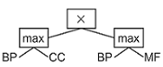

Taxonomic Similarity Measures
KG Embeddings Methods
Benchmark datasets
Motivation
KGs have been explored as providers of features and background knowledge in several machine learning application scenarios, given their ability to provide meaningful context to the data through semantic representations. Despite the recent advances in semantic representations, existing methods are unsuited to tailoring semantic representations to a specific learning target that is not encoded in the KG.
Learn moreevoKGsim+ is a framework that learns suitable semantic similarity-based semantic representations of data objects extracted from KGs optimized for supervised learning. This tailoring is achieved by evolving a suitable combination of semantic aspects using genetic programming (GP). The evolution of the semantic representations is guided by a fitness function based on the success of a given semantic representation in a specific task.
Learn moreMethodology
Step I
Represent each instance (i.e., a pair of KG entities) according to KG-based similarities computed for each semantic aspect.
More infoevoKGsim+ currently supports 10 different KG-based similarity measures based on a selection of representative state-of-the-art approaches:
6 taxonomic semantic similarity measures, derived by combining one of two information content approaches ( ICSeco and ICResnik ) with one of three set similarity measures ( ResnikMax , ResnikBMA , and SimGIC ).
4 measures based on cosine similarity over embeddings generated from TransE , distMult , RDF2Vec and Owl2Vec .
Step II
Employ GP to learn a suitable combination of the different aspect-based similarities, using a set of predefined operators, to address a given task.
More infoGP is a population-based search procedure inspired in Darwinian evolution and Mendelian genetics.
GP starts by creating an initial population of random individuals representing potential combination of semantic aspects. Each individual solution is evaluated and assigned a fitness value that quantifies how accurate are the classification predictions made by using this combination. New generations of potential combinations are iteratively created by selecting parents based on their fitness and breeding them using genetic operators like crossover and mutation. The fitter individuals are selected more often to be parents and thus pass their characteristics to their offspring, which causes the population to improve in quality along successive generations.
Learn more here .
Step III
Evaluate the predictions made on the test set and comparing them against optimized static representations that represent expert feature selection and parameter tuning.
More infoGP is used in a regression-like fashion, treating the expected class labels (0 and 1) as numeric expected outputs, and calculating fitness as the root mean squared error between the expected and predicted values, a normal procedure when using GP for binary classification.
The predicted numeric outputs are transformed in class labels, by applying the natural cutoff of 0.5, only for reporting performance.
Evaluation Strategy
Gene Ontology Knowledge Graph
GO describes protein function with respect to three semantic aspects: biological process (BP), cellular component (CC), and molecular function (MF). GO and the annotations that link proteins to GO classes make up a KG.
Protein-Protein Interaction Datasets
PPI prediction was chosen as evaluation domain since it is well known that BP and CC aspects describe properties that are stronger indicators for PPI than the MF aspect for protein interaction.
See the number of interactions of each PPI dataset
The PPI Benchmark datasets are available on GitHub.
Static Semantic Representations
Five static representations as baselines: the BP, CC and MF single aspectsand the average and maximum of the single aspects.
The static representations are employed as a simple similarity threshold-based classifier, where a semantic similarity score for a protein pair exceeding a certain threshold predicts a positive interaction.
Evolved Semantic Representations
The models returned by GP are the combinations of the semantic similarity scores of the three GO aspects, evolved to support PPI prediction.
Results
Conclusions
- evoKGsim+ with taxonomic similarity achieves a better performance than with embedding similarity
- evoKGsim+ can generate tailored semantic representations that improve classification performance over static representations
- evoKGsim+ can be readily generalized to other application and domains, where KG-based similarity is a suitable instance representation, such as prediction of drug-target interactions and gene-disease association, KG link prediction or recommendations.
Funding
Catia Pesquita, Sara Silva, Rita T. Sousa are funded by the FCT through LASIGE Research Unit, ref. UIDB/00408/2020 and ref. UIDP/00408/2020. Catia Pesquita and Rita T. Sousa are funded by project SMILAX (ref. PTDC/EEI-ESS/4633/2014), Sara Silva by projects BINDER (ref. PTDC/CCI-INF/29168/2017) and PREDICT (ref. PTDC/CCI-CIF/29877/2017), and Rita T. Sousa by FCT PhD grant (ref. SFRH/BD/145377/2019).It was also partially supported by the KATY project which has received funding from the European Union’s Horizon 2020 research and innovation programme under grant agreement No 101017453.